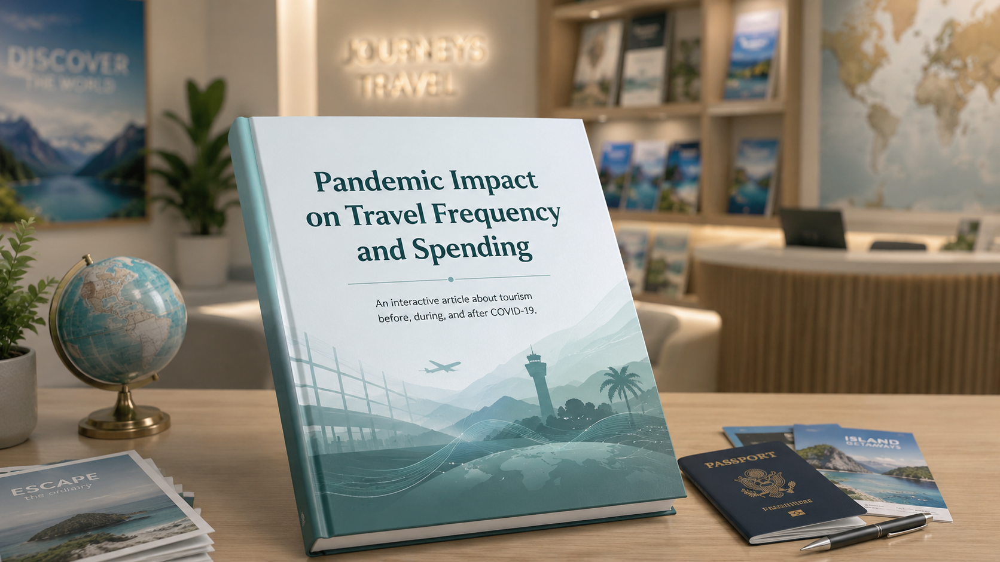

data-layout="full-text" to a section to hide the visualization and
give the text the full width of the screen. Use this for introductions, transitions,
or any moment where the data should step aside and the writing takes center stage.data-layout="full-viz" to a section to expand the visualization
to the full screen width. The text column disappears and the sketch fills the space.
Use this for a dramatic reveal, a dense chart that needs every pixel, or a
cinematic moment in your story.